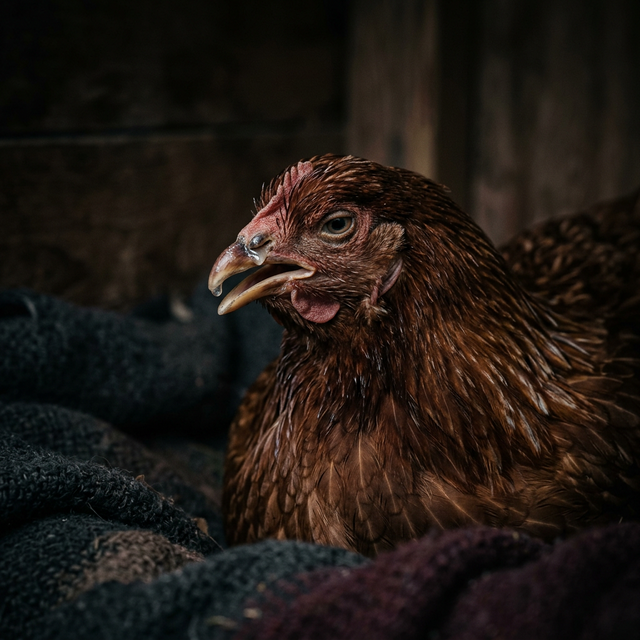
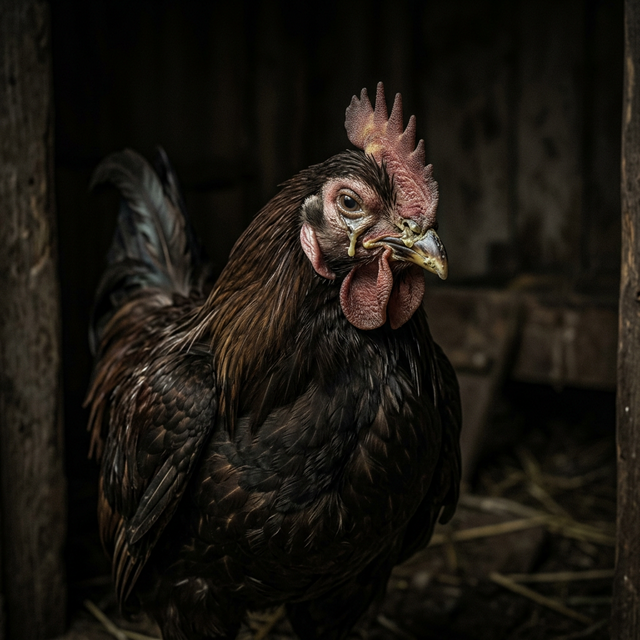
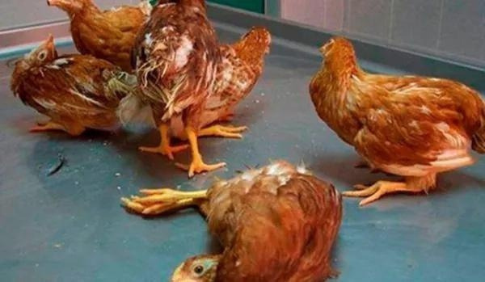
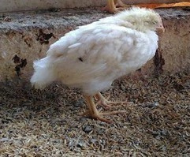
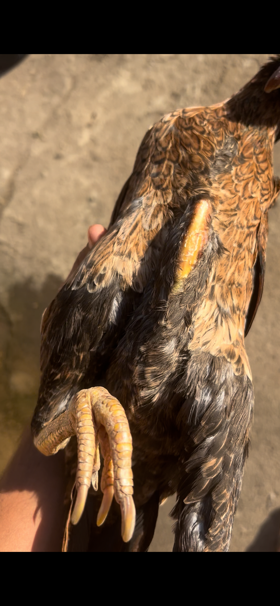
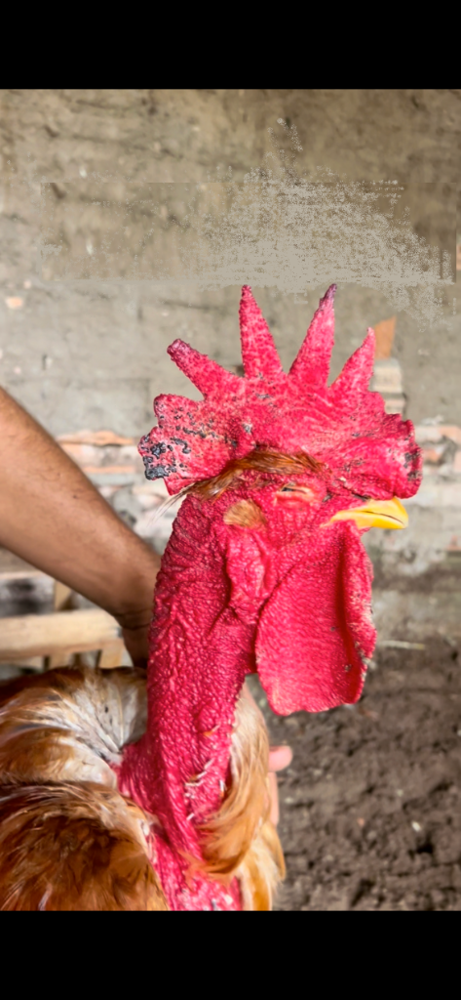

O Guia Definitivo:
Cura das Galinhas
Proteja seu plantel com o conhecimento de mais de 10 anos de experiência prática. Identifique, trate e previna prejuízos.
Apresentação
Olá, amigo criador!
Se você chegou até aqui, é provável que tenha enfrentado uma situação comum entre os apaixonados por aves: ver suas galinhas adoecerem e não saber exatamente como proceder.
Eu entendo bem esse sentimento. Meu nome é João Paulo, e sou criador de galinhas há mais de 10 anos. Neste guia, compartilho com você o conhecimento prático que adquiri ao longo dos anos, cuidando de diversas aves e superando desafios que vão desde doenças até problemas de higiene.
É importante ressaltar: não sou médico veterinário, e este material não substitui o atendimento profissional. O que você encontrará aqui é fruto da minha experiência real como criador, refletindo o que realmente funcionou no dia a dia da criação.
Introdução
Criar galinhas é muito mais do que apenas ter aves no quintal. É um compromisso com o bem-estar, a saúde e a produtividade de um plantel que pode garantir alimento, renda e satisfação pessoal.
Quem já perdeu aves por doenças sabe a frustração de não entender os sinais, de não saber o que fazer no momento certo e de ver prejuízos aumentarem por falta de informação clara e prática.
Este guia nasceu da minha experiência prática de mais de 10 anos como criador de galinhas, convivendo diariamente com os desafios do manejo e principalmente, das doenças que podem atingir nossas aves. Não sou veterinário, todo o conteúdo aqui apresentado é fruto de vivência, observação e aprendizado contínuo com outros criadores, somado a referências e recomendações já utilizadas na prática de campo.
Para quem este guia é destinado?
- Para aqueles que estão iniciando agora e desejam aprimorar os cuidados com as galinhas.
- Para criadores que já enfrentaram perdas devido a doenças e buscam evitar recorrências.
- Para todos que acreditam que a prevenção e o conhecimento são as melhores ferramentas na criação.
Neste e-book
- Principais doenças que afetam as galinhas com orientações para identificação rápida.
- Causas e sintomas mais comuns, apresentados de forma clara e acessível.
- Tratamentos que se mostraram eficazes na prática, incluindo medicamentos injetáveis, via oral e comprimidos.
"Minha missão com este e-book é ajudar você a evitar erros comuns, proteger suas aves e garantir uma criação saudável, de forma clara e objetiva, sem complicações linguísticas. Se você ama suas galinhas tanto quanto eu, este guia se tornará um recurso essencial em sua jornada como criador."

Doenças Respiratórias
Bronquite Infecciosa (IBV)

Sintomas
Espirros, tosse, respiração ruidosa, secreção nasal e ocular. Em poedeiras: queda na produção, casca mole ou deformada.
Prevenção
Vacinação é a principal medida. Biosseguridade rigorosa e evitar contato com aves silvestres.
Tratamento
Tratamento de suporte. Antibióticos para infecções secundárias:
Tilosina (Tylan): 15mg/kg (via oral) por 3 a 5 dias.
Coriza Infecciosa

Sintomas
Secreção nasal fétida, inchaço severo da face e olhos, lacrimejamento e dificuldade respiratória.
Prevenção
Vacinação em áreas de risco. Isolamento de aves doentes e desinfecção total do galinheiro.
Tratamento
Antibióticos são eficazes se administrados no início:
Enrofloxacino: 10mg/kg (via oral) por 5 a 7 dias.
Laringotraqueíte Infecciosa (ILT)
Sintomas
Dificuldade respiratória severa, tosse com sangue, estiramento do pescoço (bombeamento), conjuntivite e inchaço da face.
Prevenção
A vacinação é a medida mais eficaz. Rigorosa limpeza e desinfecção do ambiente.
Tratamento
Apenas suporte. Antibióticos para secundárias:
Oxitetraciclina: 30mg/kg (via oral) por 5 a 7 dias.
Metapneumovirose Aviária (aMPV)
Sintomas
Síndrome da Cabeça Inchada: inchaço dos seios infraorbitários, espirros, secreção nasal, e ovos com casca fina.
Prevenção
Vacinação e controle crucial de poeira e amônia no ambiente.
Tratamento
Doxiciclina: 15 mg/kg (via oral) por 5 a 7 dias.
Micoplasmose Respiratória
Sintomas
Inchaço da face e dos seios da face, dificuldade respiratória crônica, espirros e lacrimejamento constante.
Prevenção
Aquisição de aves livres de micoplasma. Controle rigoroso de ventilação.
Tratamento
Tiamulina: 25 mg/kg (via oral) por 3 a 5 dias.
Ornithobacterium (ORT)
Sintomas
Tosse, inchaço da cabeça e seios da face, associado a lesões nas articulações.
Prevenção
Evitar superlotação. Vacinação considerada para plantéis com histórico.
Tratamento
Enrofloxacina (Baytril): 10 mg/kg por 5 dias.
Doenças Virais Sistêmicas

Doença de Newcastle
Sintomas
Tosse, diarreia esverdeada, tremores, paralisia e torcicolo. Mortalidade altíssima.
Prevenção
Vacinação OBG. Controle total de tráfego de pessoas e limpeza rigorosa.
Tratamento
Suporte imunológico. Não há cura viral, apenas para infecções secundárias:
Oxitetraciclina: 30mg/kg por 5-7 dias.
Doença de Marek
Sintomas
Paralisia progressiva de asas e pernas (uma para frente e outra para trás), tumores visíveis, cegueira "olho cinza".
Prevenção
Vacinação OBRIGATÓRIA de pintinhos no 1º dia de vida. Limpeza para reduzir carga viral ambiental.
Tratamento
Incurável e sem tratamento medicamentoso. Medidas paliativas:
Sem cura. Tratamento de suporte compassivo.
Doença de Gumboro (Bursite)
Sintomas
Depressão, prostração, penas arrepiadas, diarreia aquosa e tremores. Ataca o sistema imunológico jovem.
Prevenção
Vacinação é essencial. Higiene estrita para evitar o vírus altamente resistente.
Tratamento
Tratamento de suporte imunológico e proteção contra infecções secundárias:
Complexo B e Oxitetraciclina (suporte)
Influenza Aviária (IA)
Sintomas
Queda drástica de postura, edema e cianose (barbelas azuis), hemorragias. Alta letalidade sistêmica.
Prevenção
Biosseguridade total. Evitar aves silvestres. Vacinação restrita governamental.
Notificação Oficial
Doença grave e sem cura. O foco é na contenção:
Varíola Aviária (Bouba)
Sintomas
Nódulos (verrugas) na crista/barbelas (Seca) ou placas amareladas na boca/garganta (Úmida).
Prevenção
Vacinação e controle de mosquitos (vetores da doença).
Tratamento
Thuya Avícola + Limpeza com Iodo ou Violeta.
Doenças Bacterianas

Salmonelose (Tifo Aviário)
Sintomas
Diarreia (esbranquiçada em pintos), prostração, asas caídas e queda na produção. Em adultos: penas arrepiadas e desidratação.
Prevenção
Controle de roedores e insetos. Limpeza rigorosa e aquisição de aves de plantéis certificados livres de Salmonella.
Tratamento
Antibióticos reduzem sintomas, mas a ave pode continuar portadora:
Enrofloxacina: 10mg/kg por 5-7 dias (Via Oral).
Bactrim Veterinário: 30mg/kg por 5-7 dias (Via Oral).
Cólera Aviária (Pasteurelose)
Sintomas
Forma Aguda: Morte súbita sem sintomas aparentes.
Forma Crônica: Depressão, perda de apetite, diarreia verde-amarelada, inchaço e cianose (coloração azulada) da crista e barbelas, inchaço das articulações e secreção nasal.
Prevenção
Vacinação em áreas de risco. Boas práticas de biosseguridade, controle de roedores e aves silvestres. Evitar estresse e isolar aves doentes.
Tratamento
Eficaz se administrado no início da doença. Isolar as aves, manter ambiente aquecido e fornecer vitaminas:
Oxitetraciclina: 30 mg/kg por 5-7 dias (Via Oral).
Bactrim Veterinário: 30 mg/kg por 5-7 dias (Via Oral).
Colibacilose (E. coli)
Sintomas
Espirros, tosse, diarreia, inflamação do saco vitelino (pintos) e septicemia generalizada.
Prevenção
Qualidade da água, ventilação e controle de amônia/poeira no ambiente.
Tratamento
Gentamicina: 5mg/kg por 3 dias (Via Intramuscular).
Enterite Necrótica (Clostridium)
Sintomas
Diarreia, depressão, desidratação e morte súbita. Lesões necróticas severas no intestino.
Prevenção
Controle da qualidade da água/ração. Cuidado em não sobrecarregar com alta amônia.
Tratamento
Amoxicilina: 20 mg/kg por 5 dias (Oral).
Bacitracina (conforme fabricante na água).
Doenças Parasitárias

Coccidiose (Eimeria)
Sintomas
Diarreia (contendo sangue), penas arrepiadas, perda de peso e má absorção (sementes inteiras nas fezes).
Prevenção
Higiene do galinheiro, controle de umidade da cama e rotação de piquetes.
Tratamento
Toltrazuril (Baycox): 7mg/kg (Dose Única), repetir após 5 dias se necessário.
Amprolium: 125mg/litro de água por 5-7 dias.
Verminoses (Lombriga/Tênias)
Sintomas
Emagrecimento, anemia, diarreia e diminuição da postura. Vermes visíveis nas fezes.
Prevenção
Vermifugação regular. Rotação de princípios ativos para evitar resistência.
Tratamento
Levamisol (Ripercol): 20-25mg/kg (Dose Única).
Fenbendazol (Panacur): 10-20mg/kg por 3-5 dias.
Histomoníase (Cabeça Negra)
Sintomas
Diarreia amarelada/esverdeada, emagrecimento, prostração, e cianose (escurecimento) da cabeça em casos graves.
Prevenção
Controle do verme cecal (Heterakis) que transmite o protozoário. Evitar criar galinhas junto com perus.
Tratamento
Metronidazol: 35mg/kg por 5 a 7 dias.
Tricomoníase
Sintomas
Placas amareladas espessas (caseosas) na boca e garganta, salivação excessiva, dificuldade grave para comer e respirar.
Prevenção
Higiene severa de bebedouros. Evitar pombos e aves silvestres (vetores comuns).
Tratamento
Metronidazol: 25-50mg/kg (Via Oral) por 5-7 dias.
Criptosporidiose
Sintomas
Tosse e espirros (forma respiratória) ou diarreia aquosa grave com desidratação (forma intestinal).
Prevenção
Limpeza e qualidade total da água. O protozoário é extremamente resistente no ambiente.
Tratamento
Não há tratamento específico 100% eficaz. Suporte e redução de carga:
Toltrazuril (Baycox) 7mg/kg + Eletrólitos/Vitaminas.
Condições Nutricionais
Retenção de Ovo (Egg Binding)
Sinais de Alerta
Agalinha prostrada, "andar de pinguim", esforço para defecar, inchaço abdominal.
Procedimento de Emergência
1. Banho Morno: 15-20 min com Sal Epsom (submergir parte inferior).
2. Lubrificação: Aplicar azeite ou óleo de coco suavemente na cloaca.
3. Suporte: Fornecer cálcio líquido imediato.
Deficiência de Cálcio
Causa ovos com casca fina ou mole e fraqueza nas pernas.
Correção
Disponibilizar farinha de ostra, calcário moído ou casca de ovo seca e moída à vontade.
Vitamina D3: Essencial para a absorção. Garantir acesso ao sol.
Deficiências Vitamínicas
Sintomas por Deficiência
Vit. A: Problemas de visão e mucosas.
Vit. D3: Raquitismo e ovos moles.
Vit. E: Problemas neurológicos (Encefalomalácia).
Vit. B2: Paralisia dos dedos (curvatura para dentro).
Tratamento
Complexos Vitamínicos específicos na água.
Ferimentos, Bicagem e Canibalismo
Causas e Sinais
Superlotação, estresse, falta de proteína. Aves com penas arrancadas, sangue, foco na cloaca.
Tratamento Imediato
Isolamento imediato. Limpeza com Clorexidina/Iodo. Pomada cicatrizante/repelente ou Violeta Genciana.
Ectoparasitoses (Ácaros/Piolhos)
Sintomas
Coceira constante, queda de penas, crostas, anemia profunda em infestações severas. Aves agitadas.
Tratamento
Ivermectina (0,2mg/kg) ou Fipronil na ave. Aplicação no ambiente com Cipermetrina ou Terra Diatomácea.
"Peito Seco" (Atrofia Muscular)
Ilustração: Musculatura Atrofiada
Atenção: Peito Seco não é a doença em si, mas um sintoma crônico de desnutrição severa resultante de outras enfermidades que impedem a ave de comer ou absorver nutrientes.
Investigação Recomendada
Principal causa primária na avicultura caipira: Coccidiose e Verminoses Severas.
Procure tratar os parasitas primários para que a ave volte a ganhar massa e suplemente o plantel vitamínicos.
Tabela de Sintomas x Probabilidades

| Sintomas | Provável Doença | Tratamento Sugerido |
|---|---|---|
| Face Inchada + Secreção | Coriza Infecciosa / Micoplasmose | Enrofloxacino / Tilosina |
| Diarreia Sangue / Sementes Inteiras | Coccidiose | Toltrazuril (Baycox) |
| Paralisia / Torcicolo | Marek / Newcastle / Vit. B2 | Isolamento + Suporte Vitamínico |
| Verrugas na Crista / Perna | Varíola Aviária (Bouba) | Iodo + Thuya Avícola |
| Placas Amarelas na Boca | Tricomoníase / Bouba Úmida | Metronidazol / Remoção Manual |
| Morte Súbita | Cólera Aviária / Influenza | Antibióticos Imediatos (Oxitetraciclina) |
Checklist de Manejo Diário
Período da Manhã
- Observar comportamento (ativas/alertas)
- Lavar bebedouros e trocar água
- Abastecer ração e colher ovos
Final do Dia
- Garantir que todas voltaram ao galinheiro
- Trancar para proteção contra predadores
- Observação final do plantel
Calendário de Vacinação Premium
Fase 1: Pintinhos (1 a 8 semanas)
| Idade | Vacina | Via de Aplicação |
|---|---|---|
| 1º Dia | Marek | Subcutânea (Pescoço) |
| 7º Dia | Gumboro | Ocular ou Oral |
| 14-18 Dias | Gumboro (Reforço) | Ocular ou Oral |
| 21-28 Dias | Newcastle + Bronquite | Ocular ou Oral |
| 35-42 Dias | Bouba Aviária (Cepa Suave) | Punção na Membrana da Asa |
Fase 2: Frangas (9 a 16 semanas)
| Idade | Vacina | Via de Aplicação |
|---|---|---|
| 9-10 Sem. | Newcastle + Bronquite (Reforços) | Ocular, Oral ou Spray |
| 12-14 Sem. | Coriza Infecciosa (1ª Dose) | Subcutânea ou Intramuscular |
| 13-14 Sem. | Coriza Infecciosa (2ª Dose) | Subcutânea ou Intramuscular |
| 15-16 Sem. | Bouba Aviária (Cepa Forte) | Punção na Membrana da Asa |
Protocolos de Vermifugação
A vermifugação regular é essencial para o controle de parasitas internos que sugam nutrientes e causam o "Peito Seco".
Ciclo de Aves Jovens
1ª Dose: Aos 30-45 dias de idade.
Reforço: Repetir a dose estritamente após 15 dias para quebrar o ciclo reprodutivo dos vermes.
Ciclo de Aves Adultas
Vermifugar o plantel a cada 3 a 6 meses, dependendo do sistema (sistema de piquetes ao ar livre exige mais frequência).
Regras de Ouro
1. Rotação de Princípios: Alterne os remédios (ex: Use Mebendazol num ciclo, Levamisol no outro) para evitar resistência.
2. Período de Carência: Nunca consuma ou venda ovos/carne durante o período indicado na bula do vermífugo escolhido.
Conclusão e Recomendações
A Importância da Prevenção
Doenças, uma vez instaladas, geram custos com medicamentos, perdas na produção, sofrimento para as aves e, em muitos casos, mortalidade que poderia ser evitada.
Um manejo sanitário rigoroso, uma nutrição balanceada, um ambiente limpo e sem estresse, e um programa de vacinação bem executado não são despesas, mas sim investimentos na saúde e na longevidade do seu plantel.
Cada ação preventiva, desde a limpeza diária dos bebedouros até a quarentena de uma nova ave, constrói uma barreira de proteção contra os desafios que inevitavelmente surgirão.
Quando Procurar um Veterinário
Procure um médico veterinário sempre que:
- Você observar sintomas que não consegue identificar ou que não respondem aos tratamentos iniciais.
- Houver um surto de doença com alta mortalidade ou disseminação rápida.
- Você precisar de um diagnóstico preciso, exames laboratoriais ou prescrição de medicamentos controlados.
- Para elaborar um calendário de vacinação e vermifugação personalizado para a sua realidade.
Desejamos a você muito sucesso!
Este e-book foi criado para ser um guia prático, baseado em anos de experiência, para ajudá-lo a tomar as melhores decisões no dia a dia. No entanto, é crucial reconhecer os limites do conhecimento prático e a importância do suporte profissional.
Lembre-se: a parceria com um profissional qualificado agrega segurança e conhecimento técnico à sua experiência prática, formando a combinação ideal para o sucesso da sua criação.
Espero que este guia seja um companheiro valioso em sua jornada. Que ele traga a confiança e a clareza necessárias para você alcançar seus objetivos com suas aves, evitar prejuízos e desfrutar de uma criação próspera e gratificante.
